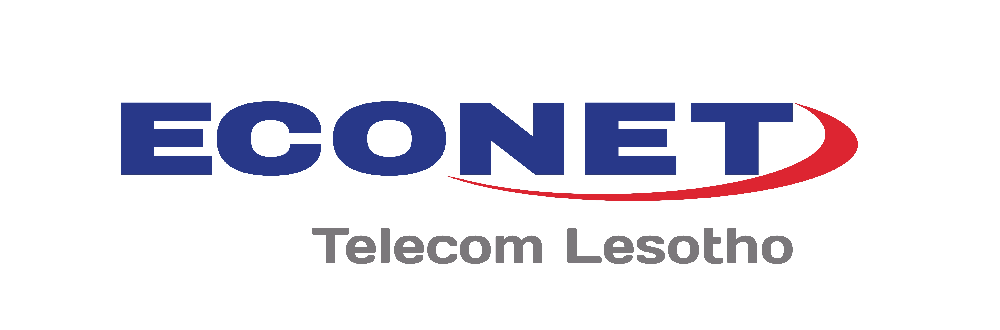

Training deckAdvance & Clearance System
A practical training deck for requesters, approvers, finance, HR, and administrators using the app.
Capture the request and save or submit.
Route through the configured approval chain.
Finance records payment references.
Reports and histories keep the trail visible.
What learners should be able to do
Use the right module
Recognize when to use advances, clearances, overtime, attendance, change requests, or request types.
Submit clean requests
Complete profile data, request details, trip lines, receipts, and supporting notes before submitting.
Approve confidently
Review the summary, chain progress, comments, and financial totals before approving, rolling back, or rejecting.
Operate the system
Maintain users, org structure, reporting lines, travel rates, workflows, request types, and reports.
The app is organized around work queues
Each role owns a different part of the request lifecycle
Most work moves from draft to settlement through the inbox
Draft
Requester captures details and can still edit freely.
Submitted
The active workflow decides the next approver.
Counter signed
Manager or assigned reviewer confirms the request.
Reviewed
HOD, EXCO, HR, or custom steps complete their checks.
Approved
Finance can prepare payment or settlement.
Paid / Settled
Reference numbers close the financial loop.
Send back for correction when the request is fixable.
Use when the request should not continue. Comments are required.
Every key action is available for tracking and reports.
Use the dashboard to decide what needs attention
- OKConfirm profile data. Department, section, team, employment type, and employee number influence routing and access.
- OKCheck active work. Open advances, clearances, recent activity, and pending inbox queues from one place.
- OKUse direct navigation. Go straight to a request list, inbox queue, report, or settings page from the sidebar.
Profile quality
Incomplete or incorrect profile data is one of the fastest ways to create routing problems.
Inbox count
The Approval Inbox count shows work awaiting action by the signed-in user.
Recent activity
Use audit-linked activity to understand what changed without asking around.
Access
Visible pages depend on role, feature permissions, and request type configuration.
Create and submit an advance request
Clearances close the loop on an advance
Link the advance
Start from an eligible advance and create the clearance against that record.
Capture actuals
Add trip rows, actual expenses, allowances, and receipts where required.
Submit for settlement
Approvers review the clearance, then Finance settles or records the final reference.
Accommodation requests
The app supports accommodation requests, hotel setup, quotations, finance processing, payment references, and rejection comments.
Receipts and evidence
Use uploads and comments to make the record self-explanatory before it reaches the next approver.
The Approval Inbox is where decisions happen
- OKOpen the grouped queue. Items are grouped by document type, such as advances, clearances, accommodation, overtime, and change requests.
- OKReview the detail view. Check summary, lines, quotations or receipts, approved total, requester, and approval progress.
- OKAdd comments. Comments are especially important for rollback, rejection, or any changed amount.
- OKChoose the right action. Approve, counter sign, roll back, reject, mark paid, or settle depending on your role and item state.
Decision checklist
Purpose
Is the reason clear and aligned with policy?
Totals
Do requested and approved amounts make sense?
Evidence
Are receipts, quotations, and comments sufficient?
Routing
Is this really your step to approve?
Attendance and overtime are separate but related records
Attendance
Used for attendance records, especially where employment type makes the page visible.
Overtime request
Submit overtime worked for supervisor and management approval.
Overtime claim
Claim overtime and move through manager authorization, HR notes, finance verification, earnings, and summary transfer steps.
Routing quality depends on clean setup data
Users
Roles, active status, profile completion, department, and permissions.
Org structure
Divisions, departments, sections, teams, CEO, EXCO, HOD, and manager ownership.
Reporting lines
Employee-to-manager relationships and auto generation tools.
Travel setup
Travel types, locations, rates, currencies, hotels, and meal values.
Permissions
Admin feature permissions decide who can access sensitive setup pages such as users, roles, workflows, reporting lines, and org structure.
Change control
Admins can enable custom request types, build fields, assign permissions, and let requesters define approval chains for change requests.
Workflows decide the approval chain
Workflow building blocks
- OKRequest type, department, section, team, and advance subtype.
- OKSticky workflows for defaults and temporary workflows for bounded changes.
- OKSteps such as Employee, Manager, HOD, EXCO Member, HR Review, Finance, CEO, or custom positions.
- OKSingle approver, any-one group approval, accommodation-only steps, and parallel stages.
Request Types let admins add controlled workflows without code
Create the type
Name it, assign a code, category, color, icon, and status.
Design the form
Add short text, number, date, dropdown, textarea, checkbox, or file fields.
Grant access
Control who can submit and who can design forms by all users, department, or named user.
Reports turn workflow activity into operational control
Advance Requests
Admin view with status, type, department, dates, amounts, and CSV export.
Approval Performance
Approval rates, rejection counts, department breakdowns, and cycle-time metrics.
SLA Reports
Processing time, SLA breach rate, compliance, and Excel / PDF export paths.
Workflow Analytics
Workflow coverage, step complexity, and usage by request type.
Audit Trail
Chronological record of advance and clearance activity with CSV export.
My Actions
Approvers can see their recent decisions from the inbox.
Small habits prevent most workflow problems
Before submitting
Check profile, department, request type, dates, amounts, purpose, travel lines, attachments, and workflow preview.
Before approving
Check request context, requester, totals, supporting evidence, chain progress, and whether comments are required.
Before configuring
Confirm the organization structure and reporting lines before changing workflows or feature permissions.
Before reporting
Use filters first, then export. Confirm date range and status definitions before sharing numbers.
Hands-on exercises for training
Requester exercise
Create a draft advance, preview the workflow chain, submit it, then locate it in My Advances.
Approver exercise
Open the Approval Inbox, review a request, add a comment, and choose approve or roll back.
Finance exercise
Record a payment or settlement reference and confirm the status changes to paid or settled.
Admin exercise
Inspect a workflow, verify its department and steps, then view the audit or SLA report for related items.